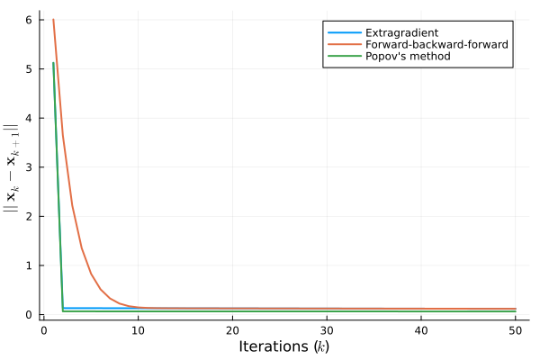

Two Players Zero-Sum Game
Many example of non-cooperative behavior between two adversarial agents can be modelled through zero-sum games [3]. Let us consider vectors $\mathbf{x}_i \in \Delta_i$ as the decision variable of the $i$-th player, with $i \in \{1,2\}$, where $\Delta_i \subset \mathbb{R}^{n_i}$ is the simplex constraints set defined as $\Delta_i := \{\mathbf{x} \in \mathbb{R}^{n_i} : \mathbf{1}^\top \mathbf{x} = 1\}$, for all $i \in \{1,2\}$. Let $\mathbf{x} := \text{col}(\mathbf{x}_i)_{i = 1}^2$. The set of the combined decisions, for the two agents, is thus $\mathcal{S} = \Delta_1 \times \Delta_2$. Let's create it:
using Random, LinearAlgebra
using Monviso, JuMP, Clarabel
Random.seed!(2024)
n1, n2 = 50, 50
# Simplex constraints' set
model = Model(Clarabel.Optimizer)
set_silent(model)
@variable(model, y[1:n1+n2])
@constraints(model, begin sum(y[begin:n1]) == 1; sum(y[n1+1:end]) == 1; end)The players try to solve the following problem
\[\begin{equation} \min_{\mathbf{x}_1 \in \Delta_1} \max_{\mathbf{x}_2 \in \Delta_2} \Phi(\mathbf{x}_1, \mathbf{x}_2) \end{equation}\]
whose (Nash) equilibrium solution is achieved for $\mathbf{x}^*$ satisfying the following
\[\begin{equation} \Phi(\mathbf{x}^*_1, \mathbf{x}_2) \leq \Phi(\mathbf{x}^*_1, \mathbf{x}^*_2) \leq \Phi(\mathbf{x}_1, \mathbf{x}^*_2), \quad \forall \mathbf{x} \in \Delta_1 \times \Delta_2 \end{equation}\]
For the sake of simplicity, we consider $\Phi(\mathbf{x}_1, \mathbf{x}_2) := \mathbf{x}^\top_1 \mathbf{H} \mathbf{x}_2$, for some $\mathbf{H} \in \mathbb{R}^{n_1 \times n_2}$. Doing so, the equilibrium condition in the previous equation can be written as a VI, with the mapping $\mathbf{F} : \mathbb{R}^{n_1 + n_2} \to \mathbb{R}^{n_1 + n_2}$ defined as
\[\begin{equation} \mathbf{F}(\mathbf{x}) = \begin{bmatrix} \mathbf{H} \mathbf{x}_2 \\ -\mathbf{H}^\top \mathbf{x}_1 \end{bmatrix} = \begin{bmatrix} & \mathbf{H} \\ -\mathbf{H}^\top & \end{bmatrix} \mathbf{x} \end{equation}\]
Let's start from creating $\mathbf{H}$ and the vector mapping $\mathbf{F}(\cdot)$:
H = rand(n1, n2)
H_block = [
zeros(n1, n2) H
-H' zeros(n1, n2)
]
F(x) = H_block * x$\mathbf{F}(\cdot)$ is Lipschitz, being linear, with constant $L = 2\|\mathbf{H}\|_2$.
L = norm(H_block)Let's create the VI associated with the game and an initial solution
vi = VI(F; y=y, model=model)
x0 = rand(n1 + n2)In this case, $\mathbf{F}(\cdot)$ is merely monotone, so we don't have guarantees for proximal gradient to converge (although it might still be used). However, there are a lot of alternative algorithms for merely monotone VIs. Let's compare three of them: extragradient (Monviso.eg), Forward-backward-forward (Monviso.fbf), and Popov's method (Monviso.popov).
max_iter = 50
residuals = (
eg = Vector{Float32}(undef, max_iter),
fbf = Vector{Float32}(undef, max_iter),
popov = Vector{Float32}(undef, max_iter)
)
# Copy the same initial solution for the three methods and iterate
let xk_eg = deepcopy(x0), xk_fbf = deepcopy(x0), xk_popov = deepcopy(x0), yk_popov = deepcopy(x0)
for k in 1:max_iter
# Extragradient
xk1_eg = eg(vi, xk_eg, 1/L)
residuals.eg[k] = norm(xk_eg - xk1_eg)
xk_eg = xk1_eg
# Forward-backward-forward
xk1_fbf = fbf(vi, xk_fbf, 1/L)
residuals.fbf[k] = norm(xk_fbf - xk1_fbf)
xk_fbf = xk1_fbf
# Popov's method
xk1_popov, yk1_popov = popov(vi, xk_popov, yk_popov, 1/(2L))
residuals.popov[k] = norm(xk_popov - xk1_popov)
xk_popov = xk1_popov
yk_popov = yk1_popov
end
endThe API docs have some detail on the convention for naming iterative steps. Let's check out the residuals for each method.
using Plots, LaTeXStrings
plot(
1:max_iter, [residuals.eg, residuals.fbf, residuals.popov];
xlabel=L"Iterations ($k$)",
ylabel=L"$||\mathbf{x}_k - \mathbf{x}_{k+1}||$",
labels=[
"Extragradient"
"Forward-backward-forward"
"Popov's method"
] |> permutedims,
linewidth=2
)